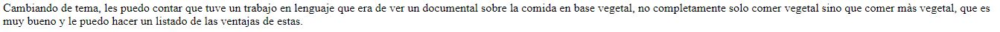
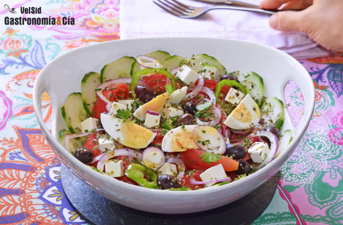

Pequeña autobiografía
Buenas, mi nombre es Juan Alonso Salvatierra Ramirez, estudiante de la carrera de ingenieria de sistemas en la universidad
USIL
.Nací el 29 de abril del año 2004, es decir tengo 17 años.Termine el colegio en Innova Schools Campoy ( Ubicación ). Es algo pequeña debido a que debo dar infomaciòn importante para poder salir en los primeros links del buscador Google.

Ventajas
- Mejor nutricción, los vegetales nos aportan minerales, vitaminas y fibra .
- Prevención del Cáncer, a diferencias de las carnes que por comerlas en cantidad te pueden producir Cáncer al colon, los vegetales no producen eso porque son bajas en grasas y más ricas en fibra.
- La alimetación basada en vegetales te da tener un buen corazón,los vegetales tienen o poco o nada de colesterol por eso es que si te cambias a tener esta alimentación tendras un optimo corazón.
- Te damas energía y esto es vital para los niños, debido a que ellos son los que mas actividades físicas hacen en su rutina diaria, a parte de ellos también estan las demas personas que lo necesitan para ser productivos en varios campus de cosas, como limpiar su cuarto,etc.
Mitos
- La carne es irremplazable.No solo la carne nos dan minerales o proteínas, sino que también los vegetales todavía tienen mas proteinas comparado con la carne. Ademas esta comprobado que nuestro cuerpo esta hecho para comer vegetales, es decir nuestro dientes o nuestro sistema digestivo esta hecho para eso.
- Preparar dietas vegetarianas o veganas requiere tiempo y sale caro, depende de los alimentos que consuma al mes, también si quieres comprar los ingredientes para preparar tus platos mismos o lo comprar en un restaurante.

Links: